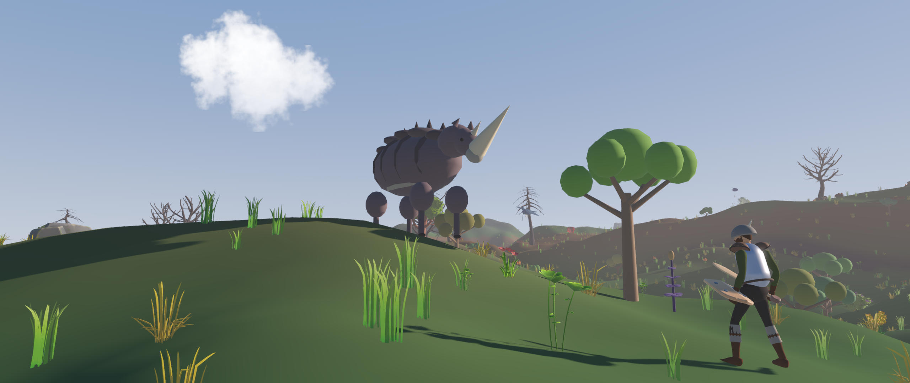
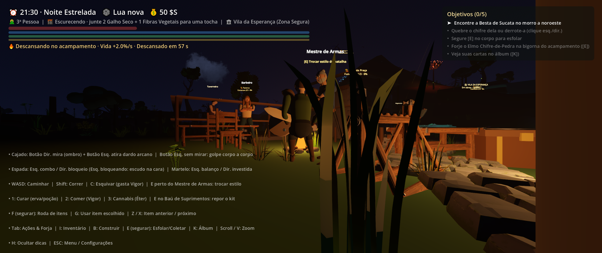
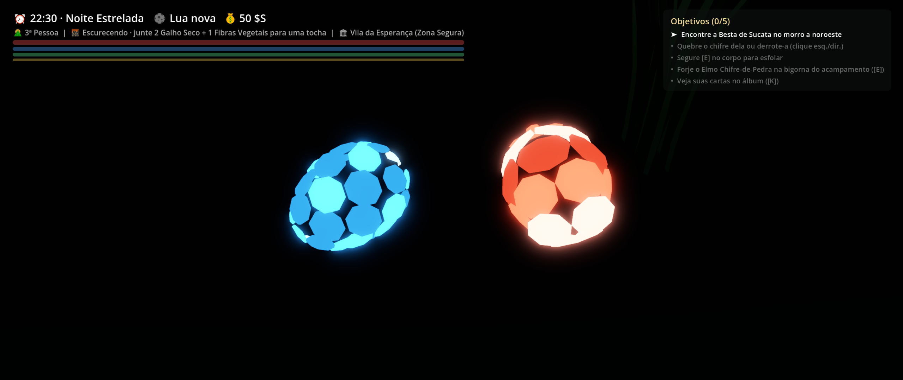
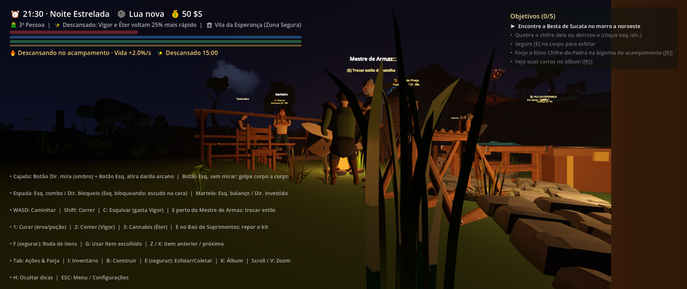
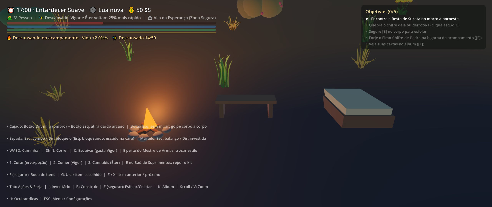

Monstros Selvagens & Combate
Enfrente feras colossais com padrões de ataque pesados, esquiva tática e estamina. De matilhas de Lobos-do-Ermo noturnos a Titãs couraçados, cada embate exige leitura e preparo de equipamento estilo Albion.
Um Sandbox Action MMORPG em mundo aberto desenvolvido em Godot 4.7. Enfrente monstros selvagens, cruze linhagens genéticas raras, erga assentamentos e explore um ecossistema vivo e persistente.

Uma fusão única entre Action RPG focado em habilidade, sobrevivência sandbox e um rico sistema biológico de criaturas.
Enfrente feras colossais com padrões de ataque pesados, esquiva tática e estamina. De matilhas de Lobos-do-Ermo noturnos a Titãs couraçados, cada embate exige leitura e preparo de equipamento estilo Albion.
Colete amostras de DNA, estude os genes de carapaça, chifre, velocidade e bioluminescência. Reproduza criaturas para herdar traços cromáticos, gerar montarias personalizadas e dominar ecossistemas.
Explore biomas contínuos em chunks integrados: minere veios de ferro e quartzo-lume, colha pinhas cintilantes da Pinheira-Lume e erga fogueiras, oficinas, bancos e telhados com encaixes modulares.
Arquitetura de rede autoritativa dedicada. Crie sua conta, encontre outros exploradores na Taverna da Vila, desafie jogadores no mini-game de Duelo de Cartas e estabeleça territórios comunais.
Capturas diretas do renderizador Forward Plus do Godot 4.7 executando no motor do jogo.




Sem instaladores pesados ou launchers de terceiros. Basta extrair e entrar no mundo.
Clique no botão de download para baixar o arquivo CepaSelvagem-0.1.1-windows.zip (~230 MB) gerado pelo pipeline de release oficial.
Clique com o botão direito no arquivo baixado e escolha "Extrair Tudo" para qualquer pasta (ex.: C:\Jogos\CepaSelvagem ou sua Área de Trabalho).
Abra a pasta extraída e dê dois cliques em CepaSelvagem.exe. O client inicializará com as texturas e sons embutidos.
Na tela inicial, informe um Nome de Usuário e Senha de sua escolha e clique em "Criar Conta & Entrar".
Cepas Selvagens utiliza o renderizador Forward Plus com renderização moderna e suporte a placas dedicadas e integradas recentes.
Instruções essenciais sobre o executável, segurança do Windows e funcionamento do playtest.
Sim, 100% seguro! Como se trata de uma build de teste fechada recém-compilada via GitHub Actions e não assinada com um certificado comercial pago da Microsoft (Code Signing corporativo), o Windows SmartScreen ainda não acumulou reputação para o novo binário.
Para abrir normalmente:
O código-fonte completo está disponível publicamente no GitHub para qualquer um auditar.
Não! O cliente já vem compilado com o endereço jogar.tarciso.dev:8787 embutido no código de rede. Basta digitar seu login e entrar. Para desenvolvedores que queiram testar servidores locais, existe um botão 🔧 Servidor Avançado (Dev) ▶ na tela inicial que permite alterar o IP para 127.0.0.1.
Nosso servidor utiliza verificação semântica estrita de versão (GAME_VERSION). Se o servidor for atualizado, retorne a esta página (ou ao repositório no GitHub) e baixe a nova build disponível.
Sua conta, personagem, inventário e posições ficam salvos no banco de dados persistente do servidor dedicado. Configurações locais de vídeo e áudio ficam salvas na pasta padrão do Godot em %APPDATA%\Godot\app_userdata\Cepas Selvagens\.
Movimento em [W][A][S][D], ataque principal em [Botão Esquerdo do Mouse], secundário em [Botão Direito], esquiva em [Espaço], inventário em [I] ou [TAB], guia do explorador em [J] ou [F1] e descanso em [Fogueira/Banco].
O objetivo deste Playtest Fechado é encontrar bugs de sincronização, balancear combates e ouvir a sua opinião sobre o ritmo de exploração. Relate anomalias, sugira monstros ou converse com os desenvolvedores.